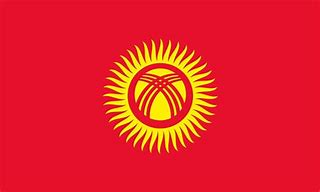

|  | Kyrgyzstan |
|---|---|
| Capital City | Bishkek |
| National Language | Kyrgyz & Russian |
| Recipes | Recipes from Kyrgyzstan |
| Culture | The Culture from Kyrgyzstan |
| Attractions | Attractions for you when you visit Kyrgyzstan |
| Population | 6 Million People |
| Population per km² | 32,9 People |
| Area in km² | 199.900 km² |